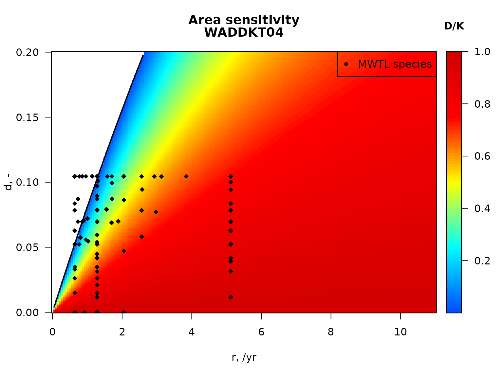

Bfiat.RmdAbstract
Bfiat is an R-package to estimate the impact of bottom trawling on organism density at the taxon level, and on ecosystem functioning. In this vignette we demonstrate the use of the package using simple examples.This document describes how to estimate the impact of bottom fisheries on sediment ecosystem functioning, using the R-package Bfiat (Bottom Fisheries Impact Assessment Tool).
This R-package contains a data-driven mechanistic model that describes how species density is being reduced by bottom trawling, and then recovers till the next fishing event.
The outcome of this biological module are trajectories of species (taxon) densities over time. As the species densities change, also the ecosystem functions delivered by the community change.
Logistic growth describes how species density or biomass evolves when the sediment is undisturbed (i.e. in between fishing events). The logistic model reads:
where is time, is the density of species at a particular time, is the carrying capacity of species , is the logistic growth parameter (units [/time]). The term on the left hand side, expresses how changes over time (it is a derivative).
The parameters and are specific for species ; the carrying capacity also depends on the site where the species is found.
To include the impact of fisheries in the logistic growth model, we can assume that trawling occurs as a series of events, that instantaneously decimate populations. In between these events the populations recover. Such fishing models consist of two parts:
Here and are the density after and before trawling occurs at time respectively, and is the depletion fraction. The higher is the depletion factor , the more the density of the species after trawling will have been reduced.
The , the proportion of a grid cell swept by fishing gear per year, is used to estimate the mean time in between fishing events : , in years. From this, the times of the fishing events can be estimated, e.g. as , where we assume equally spaced fishing events.
Another approoach to model fishing pressure on populations is to assume that fishing induces a constant mortality on the benthos of a large area rather than being caused by a set of localised events.
In this case, the (continuous) dynamic model reads (e.g. Pitcher et al., 2017):
where is the constant mortality induced upon the species .
The R-package Bfiat (Soetaert and Beauchard, 2024) contains:
## [1] "critical_d" "critical_gpd" "critical_r"
## [4] "critical_sar" "density_logistic" "density_metier"
## [7] "density_perturb" "run_logistic" "run_perturb"
## [10] "sensitivity_area" "sensitivity_taxon" "steady_logistic"
## [13] "steady_metier" "steady_perturb" "trawl_metier"
## [16] "trawl_perturb"## [1] "get_Db_model" "get_irr_model" "get_trait_model"## [1] "par_d" "par_K" "par_m" "par_r"## [1] "NIOZdata" "SAR"Functions density_perturb and run_perturb estimate the impact of bottom disturbances on benthic taxa. Both functions implement the same model, but require slightly different inputs. For instance, function run_perturb accepts randomly spaced trawling times (via argument events), while density_perturb does not.
Function density_metier allows to input several metiers, each with their own sar and depletion fraction.
They are defined as:
density_perturb (K = 1, r = 1, d = 0.1, parms = data.frame(K = K, r = r,
d = d), sar = 1, taxon_names = parms[["taxon"]], D0 = parms[["K"]],
times = 1, tstart_perturb = min(times) + 0.5/sar, tend_perturb = max(times),
as.deSolve = TRUE)
density_metier (K = 1, r = 1, parms = data.frame(K = K, r = r), d = data.frame(0.1,
0.1), sar = data.frame(1, 2), taxon_names = parms[["taxon"]],
D0 = parms[["K"]], times = 1, tstart_perturb = min(times) +
0.5/sar, tend_perturb = max(times), as.deSolve = TRUE)
run_perturb (parms, times, sar = 1, tstart_perturb = min(times) +
0.5/sar, tend_perturb = max(times), events = NULL, taxon_names = parms[["taxon"]],
D0 = parms[["K"]], addsum = FALSE, verbose = FALSE)
As an example, we estimate trawling impact on one species, with trawling occurring either once or twice per year (). The trawling lasts for 10 years, after which the sediment remains untrawled for another 10 years.
times <- seq(0, 20, length.out=1000) # output times, years
# species-specific parameters
parms <- list(r = 0.5, # [/yr], rate of increase
K = 10, # [ind], carrying capacity
d = 0.1) # [-] , depletion fraction
# run the model - one trawling event per year
out1 <- density_perturb(parms = parms,
times = times,
tstart_perturb = 2,
tend_perturb = 10,
sar = 1.)
# run the model - two trawling events per year
out2 <- density_perturb(parms = parms,
times = times,
tstart_perturb = 2,
tend_perturb = 10,
sar = 2.)
# show the results
plot(out1, out2,
xlab = "years",
ylab = "density",
main = "Trawling with events",
lty = 1, lwd = 2, las=1)
legend("bottomright",
title = "sar",legend = c("1/yr", "2/yr"),
lty = 1, col = 1:2)Two trawling impact runs, for a species with [r=0.5/yr, K=10 ind, d=0.1]; trawling lasts for 10 years, followed by a recovery of 10 years
Functions density_logistic and run_logistic implement a fishing model with constant mortality, and are defined as:
density_logistic (K = 1, r = 1, m = 0.1, parms = data.frame(K = K, r = r,
m = m), taxon_names = parms[["taxon"]], D0 = parms[["K"]],
times = 1, tstart_perturb = min(times), tend_perturb = max(times),
as.deSolve = TRUE)
run_logistic (parms, times, tstart_perturb = min(times), tend_perturb = max(times),
taxon_names = parms[["taxon"]], D0 = parms[["K"]], addsum = FALSE,
verbose = FALSE)
We run this model with mortality = 0.1 and 0.2 /year. As before we assume that fishing stops after 10 years. This can simply be set with argument tend_perturb.
times <- seq(0, 20, length.out=1000) # output times, years
parms <- list(r = 0.5, # [/yr], rate of increase
K = 10, # [ind], carrying capacity
m = 0.1) # [/yr], mortality rate
c1 <- density_logistic(times = times,
tstart_perturb = 2,
tend_perturb = 10,
parms = parms)
# increase mortality
p2 <- parms
p2$m <- 0.2
c2 <- density_logistic(times = times,
tstart_perturb = 2,
tend_perturb = 10,
parms = p2)
# Show results
plot(c1, c2,
xlab = "years", ylab = "density",
main = "Constant trawling",
lty = 1, lwd = 2, las = 1)
legend("bottomright",
legend = c("0.2/yr", "0.4/yr"), title = "m",
lty = 1, col = 1:2)Two trawling impact runs, for a species with [r=0.5/yr, K=10 ind, d=0.1, m=0.1 and m=0.2/yr]; trawling lasts for 10 years, followed by a recovery of 10 years
The same models can be run for several species at once:
times <- seq(0, 20, length.out=1000) # output times [year]
# Species names and parameters
parms <- data.frame(
taxon = c("s1", "s2", "s3"),
K = c( 2, 10, 4), # carrying capacity [g/m2]
r = c( 2, 5, 0.4), # rate of increase [/year]
d = c( 0.5, 0.3, 0.1) # depletion rate
)
# run the model
run1 <- density_perturb(parms = parms,
times = times,
tstart_perturb = 2,
tend_perturb = 10,
sar = 0 )
run2 <- density_perturb(parms = parms,
times = times,
tstart_perturb = 2,
tend_perturb = 10,
sar = 1 )
run3 <- density_perturb(parms = parms,
times = times,
tstart_perturb = 2,
tend_perturb = 10,
sar = 2 )
# show the results
plot(run1, run2, run3,
lty=1, lwd=2, mfrow=c(3,1), las=1)
legend(x="bottomright",
legend=c("0", "1", "2"), title="trawls/year",
col=1:3, lty=1, lwd=2)Trawling impacts on three species (s1, s2 and s3) and for two trawling intensities
We can also simulate several metiers (fishing activities), each with their own depletion induced on the species:
times <- seq(0, 20, length.out=1000) # output times [year]
# Species names and parameters
parms <- data.frame(
taxon = c("s1", "s2", "s3", "s4"),
K = c( 2, 10, 4, 1), # carrying capacity [/m2]
r = c( 5, 2, 0.4, 1) # rate of increase [/year]
)
# 4 metiers
sar <- data.frame(m1 = 1, m2 = 0.7, m3 = 1.5)
# depletion rate is species (rows) and metier- specific (columns)
# sp1 sp2 sp3 sp4
d <- data.frame(m1 = c( 0.5, 0.3, 0.1, 0.3), # metier 1
m2 = c( 0.3, 0.6, 0.2, 0.2), # metier 2
m3 = c( 0.2, 0.1, 0.02, 0.05))
# run the model
runm <- density_metier(parms = parms,
d = d,
times = times,
tstart_perturb = c(0.5, 1, 1.5),
tend_perturb = 10,
sar = sar )
# show the results
plot(runm, lty = 1, las = 1) #, main = "3 metiers")Trawling impacts on four species (s1, s2, s3 and s4) and for three metiers
Function get_trait_model combines modeled species responses with traits; it is defined as:
get_trait_model (model, trait, trait_class = NULL, trait_score = NULL,
taxon_names = colnames(model)[-1], taxonomy = NULL, taxon_column = 1,
scalewithvalue = TRUE, verbose = FALSE)
Using the previous model runs, we estimate the impact of trawling on the feeding type of species, where we assume they are either suspension or deposit feeders.
We first define the extent to which, for each species, both types of feeding contributes to its diet, and where the sum of the proportions = 1.
feedingtype <- data.frame(taxon = c("s1", "s2", "s3"),
suspension = c( 0, 0.5, 1),
deposit = c( 1, 0.5, 0))
knitr::kable(feedingtype)| taxon | suspension | deposit |
|---|---|---|
| s1 | 0.0 | 1.0 |
| s2 | 0.5 | 0.5 |
| s3 | 1.0 | 0.0 |
Then we calculate how both feeding types are affected by the trawling. We first estimate the total numbers of both types, after which we also estimate the relative contribution (using argument scalewithvalue).
FT <- get_trait_model(model = run2,
trait = feedingtype,
scalewithvalue = FALSE)
FT2 <- get_trait_model(model = run2,
trait = feedingtype)
plot(FT, ylab = "/m2",
mfrow = c(2, 2), las = 1)
plot(FT2, ylab = "-",
main = c("fraction suspension feeding", "fraction deposit feeding"),
mfrow = NULL, las = 1)Change in absolute (top) and relative (bottom) contribution of feeding types due to trawling
Similarly, we can merge the model output for instance with mean weight of each taxon, where when scalewithvalue=FALSE, we will obtain the summed weights of all individuals, whereas if scalewithvalue=TRUE, we will obtain the mean weight of the entire community.
# Biomass as a trait
WW <- data.frame(taxon = c("s1", "s2", "s3"),
biomass = c(0.1, 0.5, 1))
Lrun <- get_trait_model(model = run2,
trait = WW,
scalewithvalue=TRUE)
Lrun2 <- get_trait_model(model = run2,
trait = WW,
scalewithvalue=FALSE)
plot(Lrun, main = "mean weight", xlab = "g/ind",
mfrow = c(1, 2), las = 1)
plot(Lrun2, main = "summed weight", xlab = "g/m2",
mfrow = NULL, las = 1)Change in mean and total weight due to trawling
Functions get_Db_model, get_irr_model estimate the effect of species responses on bioturbation and bioirrigation rates, as described in Querios et al., 2013 and Wrede et al., 2018 respectively. They are defined as:
get_Db_model (model, trait = Btrait::Traits_Db, taxon_names = colnames(model)[-1],
taxonomy = NULL, weight, verbose = FALSE, na.rm = FALSE)
get_irr_model (model, trait = Btrait::Traits_irr, taxon_names = colnames(model)[-1],
taxonomy = NULL, weight, verbose = FALSE, na.rm = FALSE)
To calculate the bioturbation index, we need to input the relevant trait information. This should be a data.frame, with the first column the name of the taxon, and followed by columns denoting the mobility and reworking modes (values between 1-4 and 1-5 respectively). These columns should be named “Mi” and “Ri”.
For the bioirrigation index, next to the taxon name the columns named “BT” (burrowtype, value from 1-3), “FT” (feeding type, 1-3), and “ID” (injection depth, 1-4) should be present.
To calculate both indices, we also require the mean weight of the taxa; this should be passed as a data.frame with taxonname in the first column, and the weight in the second.
The formula for estimating the bioturbation Index for taxon i (as in Querios et al., 2013) is:
The formula for estimating the bioirrigation Index for taxon i (as in Wrede et al., 2018) is: ,
As an example, we first input the weights and traits required, and then estimate the bioturbation and bioirrigation potential associated to previous runs.
The bioturbation and bioirrigation function estimate the contribution of each species to these indices, as well as the total index.
weight <- data.frame(taxon = c("s1", "s2", "s3"),
weight = c( 0.5, 1.0, 3))
Dbtrait <- data.frame(taxon = c("s1", "s2", "s3"),
Ri = c( 4, 3, 1),
Mi = c( 3, 3, 2))
irrtrait <- data.frame(taxon = c("s1", "s2", "s3"),
BT = rep(1, times=3),
FT = c( 3, 2.5, 2),
ID = c( 3, 3, 1))
Db <- get_Db_model(model = run2,
trait = Dbtrait,
weight = weight)
plot(Db, las=1)Change in absolute (top) and relative (bottom) contribution of feeding types due to trawling
Irr <- get_irr_model(model = run2,
trait = irrtrait,
weight = weight)
plot(Irr, las=1)Change in absolute (top) and relative (bottom) contribution of feeding types due to trawling
The package Bfiat also contains functions to estimate the fishing parameters.
Function par_d estimates the depletion rate as a function of the depth occurrence of a species and of the gear penetration depth.
The depletion fraction () for a certain species is implemented as: where and are the upper and lower depth of the species’ living space, is a coefficient that scales the depletion to the depth that the gear has penetrated in the species’s living space (the sediment depth inbetween ), and where is the fractional occurrence of species in that zone. The maximal depletion fraction is limited to the value .
Good values for these parameters are and . The function is defined as:
par_d (gpd = 1, m_d = 0.055, m_max = 0.42, fDepth, uDepth)
Below, the depletion rate is estimated for three species, where the living depth of the species has been divided in 2 sediment layers (0-10 and 10-20 cm), and is fuzzy coded.
The first species lives in the upper sediment layer (D0_10) only; the second is equally distributed between layers and the third is only found below 10 cm:
fDepth <- data.frame(D0_10 = c(1, 0.5, 0), #upper depth=0
D10_20 = c(0, 0.5, 1)) #upper depth=10
uDepth <- c(0, 10) # upper depth The depletion, using the default parameter settings, and for a gear penetration depth of 1 cm is:
par_d (gpd = 1,
fDepth = fDepth,
uDepth = uDepth)## [1] 0.0550 0.0275 0.0000
par_d (gpd = 10,
fDepth = fDepth,
uDepth = uDepth)## [1] 0.420 0.275 0.000Note that the deep-living species is not affected by any of the gears.
Function par_r estimates the rate of increase (units ), as a function of the species age at maturity (a_i) as follows: It is defined as:
par_r (age_at_maturity = NULL, longevity = NULL)
Age_mat <- seq(from = 0, to = 5, length.out=100)
plot(x = Age_mat,
y = par_r(Age_mat),
xlab = "age at maturity, year",
ylab = "r, /year",
main = "relationship between age at maturity and r",
las = 1)relationship between longevity and rate of increase
Function par_K estimates the species carrying capacity, based on the fishing parameters, and species density. It does so by inverse modelling, assuming that the measured density is the density of the fauna, under the fishing pressure (sar).
par_K (density, sar, r, d, t_density = NULL)
## [1] 2.053105 NANot all combinations of parameters lead to viable carrying capacities, notably if the mortality induced by fisheries is larger than the species intrinsic rate of increase (r), then the species should become extinct due to fishing.
Carrying capacity K can be estimated for a sequence of fishing intensities
# sequence of fishing intensities
sar.seq <- seq(from=0.05, to=3, by=0.05)
# estimate carrying capacity for all these fishing intensities
K.seq <- par_K(density = 1,
sar = sar.seq,
r = 0.5,
d = 0.2)
plot(sar.seq, K.seq,
xlab = "Swept area ratio, /yr",
ylab = "K/D",
main = "relationship between sar and K",
las = 1, ylim = c(0, 10))relationship between carrying capaicty and swept area ratio
Note that the higher the trawling intensity (or swept area ratio), the more the current density will deviate from the actual carrying capacity, so the K/sar ratio significantly increases with sar. Above a sar=2.25, the mortality becomes larger than the rate of increase, and the species is likely to be extinct.
Function par_m estimates the constant mortality parameter for a species with growth rate r, so that the continuous fishing model is consistent with the discrete model with parameters d and the fishing intensity sar.
par_m (sar, r, K, d, refD = K)
par_m(sar = 2,
r = 0.5,
d = 0.2, K = 1)## [1] 0.4447989Function density_perturb estimates densities at selected times, while trawl_perturb estimates the density before and after the n-th trawling event.
density_perturb (K = 1, r = 1, d = 0.1, parms = data.frame(K = K, r = r,
d = d), sar = 1, taxon_names = parms[["taxon"]], D0 = parms[["K"]],
times = 1, tstart_perturb = min(times) + 0.5/sar, tend_perturb = max(times),
as.deSolve = TRUE)
trawl_perturb (K = 1, r = 1, d = 0.1, parms = data.frame(K = K, r = r,
d = d), sar = 1, D0 = parms[["K"]], n = 1)
density_perturb(sar = 1,
r = 0.5,
d = 0.2,
times = seq(0, 2, by = 0.5))## times 1
## 1 0.0 1.0000000
## 2 0.5 1.0000000
## 3 1.0 0.8370301
## 4 1.5 0.8683324
## 5 2.0 0.7449818
trawl_perturb(sar = 2,
r = 0.5,
d = 0.2,
n = 10:12)## K r d sar D0 times times_end ntrawl_from ntrawl_to density
## 1 1 0.5 0.2 2 1 4.5 5.0 10 11 0.3379225
## 2 1 0.5 0.2 2 1 5.0 5.5 11 12 0.3197363
## 3 1 0.5 0.2 2 1 5.5 6.0 12 13 0.3038197
## density_start density_end
## 1 0.3103657 0.3662333
## 2 0.2929867 0.3473014
## 3 0.2778411 0.3306613
trawl_perturb(sar = 2:10,
r = 0.5,
d = 0.2,
n = 1)## K r d sar D0 times times_end ntrawl_from ntrawl_to density
## 1 1 0.5 0.2 2 1 0 0.5 1 2 0.8190069
## 2 1 0.5 0.2 3 1 0 0.5 1 2 0.8128907
## 3 1 0.5 0.2 4 1 0 0.5 1 2 0.8097507
## 4 1 0.5 0.2 5 1 0 0.5 1 2 0.8078403
## 5 1 0.5 0.2 6 1 0 0.5 1 2 0.8065557
## 6 1 0.5 0.2 7 1 0 0.5 1 2 0.8056328
## 7 1 0.5 0.2 8 1 0 0.5 1 2 0.8049376
## 8 1 0.5 0.2 9 1 0 0.5 1 2 0.8043951
## 9 1 0.5 0.2 10 1 0 0.5 1 2 0.8039600
## density_start density_end
## 1 0.8 0.8370301
## 2 0.8 0.8253410
## 3 0.8 0.8192530
## 4 0.8 0.8155214
## 5 0.8 0.8130008
## 6 0.8 0.8111842
## 7 0.8 0.8098128
## 8 0.8 0.8087410
## 9 0.8 0.8078802Function steady_perturb and steady_logistic estimate the density at steady state.
steady_perturb (K = 1, r = 1, d = 0.1, parms = data.frame(K = K, r = r,
d = d), sar = 1, D0 = parms[["K"]], tol = 1e-06)
steady_logistic (K = 1, r = 1, m = 0.1, parms = data.frame(K = K, r = r,
m = m), D0 = parms[["K"]], tol = 1e-06)
(sD <- steady_perturb(K = 1,
sar = c(1, 2, 3),
r = 0.5,
d = 0.2))## K r d sar D0 density_before density_after density ntrawl time
## 1 1 0.5 0.2 1 1 6.146287e-01 4.917030e-01 5.537146e-01 40 40
## 2 1 0.5 0.2 2 1 1.198015e-01 9.584121e-02 1.074297e-01 374 187
## 3 1 0.5 0.2 3 1 1.746276e-09 1.397021e-09 1.520186e-09 333 111
# this is the inverse and should return K=1
par_K(density = sD$density,
sar = c(1, 2, 3),
r = 0.5,
d = 0.2)## [1] 1.000003 1.000036 NAThere are 2 data sets in the Bfiat package:
Dataset NIOZdata provides macrofauna density and biomass data at 4 sites in the NorthSea.
map_key(x = NIOZdata$stations$x,
y = NIOZdata$stations$y,
contours = NIOZdata$contours, colkey = FALSE,
col.levels = "grey", by.levels = 5, draw.levels = TRUE,
pch = 16)
text(x = NIOZdata$stations$x,
y = NIOZdata$stations$y+0.5,
labels = NIOZdata$stations$station)Stations in the NIOZdata dataset
The characteristics of NIOZdata, in terms of density and biomass are:
| station | density | biomass | numTaxa | depth | D50 | silt | sar | subsar | gpd |
|---|---|---|---|---|---|---|---|---|---|
| Doggerbank | 1519 | 240 | 61 | 26 | 217 | 0.0 | 1.91 | 0.38 | 1.71 |
| FladenGround | 1170 | 447 | 51 | 135 | 57 | 40.0 | 3.18 | 0.52 | 1.55 |
| FrieseFront | 1322 | 297 | 57 | 34 | 86 | 38.0 | 1.24 | 0.85 | 2.17 |
| Vlakte_van_de_Raan | 20598 | 1103 | 81 | 10 | 210 | 8.3 | 6.31 | 3.22 | 2.45 |
Fishing intensity for the Northsea area as annual swept area ratios are in a dataset called SAR, with a resolution of 0.05 dg in longitudinal, and 0.05 dg in the latitudinal direction. The data originate from ICES, and have been compiled on request of OSPAR. They comprise:
Note: the R-package, Btrait (Soetaert and Beauchard, 2022) also contains density and trait data that can be used for fishery assessment.
Function sensitivity_taxon estimates for one taxon the density decrease for combinations of sar (swept area ratio) and gpd (gear penetration depth); also estimates (sar x gpd) values where the taxon reaches a critical level.
Def_fun(sensitivity_taxon)## sensitivity_taxon (fDepth = 1, uDepth = 0, r = 0.1, sar.seq = seq(0, 10,
## length.out = 200), gpd.seq = seq(0, 5, length.out = 200),
## ...)
## Function critical_sar and critical_gpd estimate the critical fishing intensity and gear penetration depth above which the taxon would become extinct (crit_DK = 0) or attain some predefined fraction of its carrying capacity (crit_DK > 0).
Def_fun(critical_sar)## critical_sar (gpd = 1, fDepth = 1, uDepth = 0, d = NULL, r = 0.1,
## crit_DK = 0, ...)
##
Def_fun(critical_gpd)## critical_gpd (sar = 1, fDepth = 1, uDepth = 0, d = NULL, r = 0.1,
## crit_DK = 0, ...)
## In the figure below, first the sensitivity for the species Arctica islandica in the Dutch North sea area (the MWTL data) is estimated and plotted. The sensitivity to fishing intensity (sar) and gear penetration depth (gpd) shows a rather large area where the species cannot survive (the white region). We then add all stations from the Dutch part of the North sea, characterised by the sar and gpd. This shows how the species would do in these stations. We end by estimating the critical sar for the gears (gpd) used in the Dutch Northsea, above which Artica islandica would dissappear.
par(mfrow = c(1,1), las = 1)
# parameters for Arctica islandica
subset(MWTL$fishing,
subset = (taxon == "Arctica islandica"))## taxon p0 p0_5cm p5_15cm p15_30cm p30cm Age.at.maturity r
## 38 Arctica islandica 0 0.6 0.4 0 0 4 0.64
S_af <- sensitivity_taxon(r = 0.64,
fDepth = c(0.75, 0.25),
uDepth = c(0, 5))
# image, white = extinct
image2D(x = S_af$sar, y = S_af$gpd, z = S_af$DK,
xlab = "sar, /yr", ylab = "gpd, cm",
main = c("Species sensitivity", "Arctica islandica"),
col = jet2.col(100), clab = "D/K")
lines(S_af$sar, S_af$critical_gpd, lwd = 2)
# add the stations in the MWTL data (from Btrait)
points(MWTL$abiotics$sar, MWTL$abiotics$gpd,
pch = 18, col = "black")
legend("topright", pch = 18, legend = " MWTL stations")
c_s_MWTL <- critical_sar(gpd = MWTL$abiotics$gpd,
fDepth = c(0.75, 0.25),
uDepth = c(0, 5))
summary(c_s_MWTL)## Min. 1st Qu. Median Mean 3rd Qu. Max.
## 0.7282 1.2278 1.2863 1.3744 1.5133 2.1144Function sensitivity_area estimates for one set of sar and gpd values the density decrease for combinations of r (rate of natural increase) and d (depletion) of a taxon; also estimates critical (r x d) combinations for the area.
Def_fun(sensitivity_area)## sensitivity_area (sar = 1, gpd = 1, r.seq = seq(0.1, 5, length.out = 200),
## d.seq = seq(0, 0.5, length.out = 200))
## Functions critical_r and critical_d estimate the critical intrinsic rate of natural increase (r) and depletion fraction (d) beyond which a taxon, that experiences the fishing intensity and gear penetration depth of the area, would become extinct (crit_DK = 0) or attain some predefined fraction of its carrying capacity (crit_DK > 0).
Def_fun(critical_r)## critical_r (sar = 1, gpd = 1, fDepth = 1, uDepth = 0, d = NULL,
## crit_DK = 0, ...)
##
Def_fun(critical_d)## critical_d (sar = 1, r = 0.1, crit_DK = 0, ...)
## We plot the sensitivity for one station in the Dutch part of the Northsea, and add the species from the MWTL area on this plot.
par(mfrow = c(1,1), las = 1)
# parameters for station WADDKT04
subset(MWTL$abiotics,
subset = (station== "WADDKT04"),
select = c(station, sar, gpd))## station sar gpd
## 97 WADDKT04 11.81742 1.898136
S_W <- sensitivity_area(sar = 11.817,
gpd = 1.90,
r.seq = seq(0, 11, length.out = 200),
d.seq = seq(0, 0.2, length.out = 200))
# image of station sensitivity, white = extinct (D/K = NA)
image2D(x = S_W$r, y = S_W$d, z=S_W$DK,
xlab = "r, /yr", ylab = "d, -",
main = c("Area sensitivity",
"WADDKT04"),
col = jet2.col(100), clab = "D/K")
lines(S_W$r, S_W$critical_d, lwd = 2)
# Species characteristics relating to fishgin for species in the MWTL data
# (from package Btrait)
SP_Fish <- MWTL$fishing
# depletion for all MWTL species in station WADDKT04
SP_Fish$dW <- par_d(
gpd = 1.90,
fDepth = SP_Fish[, c("p0", "p0_5cm", "p5_15cm", "p15_30cm", "p30cm")],
uDepth = c( 0, 0, 5, 15, 30))
points(SP_Fish$r, SP_Fish$dW,
pch = 18, col = "black")
legend("topright", pch = 18, legend = " MWTL species")
We now calculate the impact of bottom trawling on one station in the Norths Sea, located in the FrieseFront, and part of the NIOZdata dataset.
This station is located at 4.447 dgE and 53.667 dgN. It is 34 m deep, and has a fine-sandy sediment with median grain size = 86 .
To apply the fisheries model to this station, we first select the density and biomass of the macrofauna. The biomasses are in wet weight and called “biomass_ww”.
FF <-
get_density(data = NIOZdata$density,
descriptor = station,
subset = station == "FrieseFront",
taxon = taxon,
value = data.frame(density, biomass_ww)
)To estimate fishing effects, we need, for each taxon, the living depth (substratum depth distribution), and the age at maturity.
We first find the names, and meaning of the traits in the NIOZ trait database (Traits_nioz, from package Btrait), and select the traits relating to living depth and age at maturity:
traits.lab <- metadata(Traits_nioz)
# metadata of traits in database (name, value, ...)
meta.depth <- subset(traits.lab,
subset = trait == "Substratum depth distribution")
meta.maturity <- subset(traits.lab,
subset = trait == "Age at maturity")
# select actual traits
traits.depth <- subset(Traits_nioz,
select = c("taxon", meta.depth$colname))
traits.maturity <- subset(Traits_nioz,
select = c("taxon", meta.maturity$colname))We then extract the traits for each species in the data, passing also the taxonomic relationships. This allows the traits to be estimated also for species that are not documented in the trait database. The taxonomy has been obtained from the worms database, and is stored in NIOZdata$taxonomy.
The trait database records the traits in fuzzy format. For the depth distribution, we keep the data fuzzy, as some species may be found in different depth levels.
As we need the mean age at maturity, we also pass the trait class and value (argument trait_class, trait_score).
taxa <- unique(NIOZdata$density$taxon)
Depth <- get_trait(taxon = taxa,
trait = traits.depth,
taxonomy = NIOZdata$taxonomy)
colnames(Depth)[-1] <- meta.depth$modality
Maturity <- get_trait(taxon = taxa,
trait = traits.maturity,
taxonomy = NIOZdata$taxonomy,
trait_class = meta.maturity$trait,
trait_score = meta.maturity$value)
Traits_combined <- merge(Depth, Maturity)The age at maturity can now be used to estimate the intrinsic rate of natural increase:
Traits_combined$r <- par_r(age_at_maturity = Traits_combined$Age.at.maturity)This information is merged with the data.frame that contains the station-species information, where the common columns are the “taxon”:
FF <- merge(FF, Traits_combined,
by = "taxon")For each station in the data set, the Swept Area Ratio (sar) and estimated gear penetration depth (gpd), averaged over the years 2009-2017 is stored in the NIOZdata$abiotics table; the sar and gpd for station FrieseFront is extracted and added to the parameter file:
FF$sar <- subset(NIOZdata$abiotics,
subset = station=="FrieseFront")$sar
FF$gpd <- subset(NIOZdata$abiotics,
subset = station=="FrieseFront")$gpd
FF <- FF[order(FF$density, decreasing=TRUE),]
row.names(FF) <- NULLThe depletion during trawling is estimated based on the depth of occurrence.
The depletion rate can now be estimated, based on the sar (1.2392633) and the gear penetration depth (2.1715897). We use the function par_d to estimate the depletion rate.
fDepth <- FF[,c("0", "0-5", "5-15", "15-30", ">30")]
uDepth <- c( 0, 0, 5, 15, 30)
FF$d <- par_d(gpd = FF$gpd, # gear penetration depth
fDepth = fDepth, # fractional occurrence in depth layers
uDepth = uDepth) # upper depth of layersWe can now estimate the species carrying capacity, using function par_K.
FF$K <- par_K(density = FF$density,
sar = FF$sar,
r = FF$r,
d = FF$d)The parameter file is now thinned, removing the columns we do not need any further:
pnames <- c("taxon", "density", "biomass_ww", "K", "r", "d", "sar")
FF <- FF[order(FF$taxon),pnames]| taxon | density | biomass_ww | K | r | d | sar |
|---|---|---|---|---|---|---|
| Abra | 81.2 | 0.1 | 83.1 | 5.1 | 0.1 | 1.2 |
| Abra alba | 20.9 | 0.3 | 21.2 | 5.1 | 0.1 | 1.2 |
| Abra nitida | 2.3 | 0.1 | 2.4 | 5.1 | 0.1 | 1.2 |
| Abyssoninoe hibernica | 30.2 | 0.5 | 33.2 | 0.7 | 0.1 | 1.2 |
| Ampelisca brevicornis | 2.3 | 0.0 | 2.4 | 5.1 | 0.1 | 1.2 |
| Amphiura filiformis | 429.2 | 22.7 | 524.5 | 0.6 | 0.1 | 1.2 |
The model is run for 40 years, where trawling occurs only the first 20 years. We specify the times at which a fishing event occurs and pass this to the model function (run_perturb). The argument addsum, when set equal to TRUE calculates the summed densities.
# timings of the fishing events, based on sar
events <- seq(from = 1/FF$sar[1],
by = 1/FF$sar[1],
to = 20)
times = seq(0, 40, length.out = 10000)
# run the model
fish.FF <- run_perturb(parms = FF,
times = times,
sar = FF$sar[1],
tend_perturb = 20,
addsum = TRUE)As the parameter file was ordered with respect to the species density, it is easy to plot the density trajectory for the 8 most abundant species (which=1:8); this is followed by the total density.
Abundant <- FF$taxon[order(FF$K, decreasing = TRUE)]
plot(fish.FF,
which = Abundant[1:8],
ylab = "ind/m2",
xlab = "year", las=1)
plot(fish.FF,
which = "sum",
ylab = "ind/m2",
xlab = "year",
las=1, mfrow=NULL) # mforw=NULL to prevent it from starting a new figureFishing impact on the density of the 8 most abundant species, and the total density in station FrieseFront; 20 years of fishing followed by 20 years without fishing.
Using the previous model run, we estimate the impact of trawling on suspension feeders.
We first extract the modality “Suspension feeder” from the nioz trait database:
meta.susp <- subset(
metadata(Traits_nioz),
subset= (modality == "Suspension feeder"))
traits.susp <- subset(Traits_nioz,
select = c("taxon", meta.susp$colname))
colnames(traits.susp)[2] <- "SuspensionFeeder"The nioz trait database stores the trait modalities in fuzzy format, so the data record the fractional contribution of suspension feeding to the diet of each species:
head(traits.susp, n=3)## taxon SuspensionFeeder
## 1 Abludomelita 0.0
## 2 Abludomelita obtusata 0.0
## 3 Abra alba 0.5We now calculate the degree to which suspension feeding changes in the community, using the function get_trait_model. For those species in the model whose suspension feeding is not known, we use the taxonomic closeness to find good values; this is simply done by passing data.frame Taxonomy.
susp1 <- get_trait_model(model = fish.FF,
trait = traits.susp,
taxonomy = NIOZdata$taxonomy)
plot(susp1,
main = "Relative abundance suspension feeders", ylab = "-", las = 1)The bioturbation potential can be easily estimated by passing the correct database to the function get_Db_model. For this function, we also need the mean weight of the species which is calculated first (WW).
WW <- data.frame(taxon = FF$taxon,
W = FF$biomass_ww/FF$density)
Db.FF <- get_Db_model(model = fish.FF,
trait = Traits_Db,
taxonomy = NIOZdata$taxonomy,
weight = WW,
na.rm = TRUE) # removes those species where W is NA
plot(Db.FF,
which = paste("BPc" , Abundant[1:8], sep="_"),
ylab = "BPc, -", las = 1)
plot(Db.FF,
which = "BPc",
ylab = "-",
las = 1, mfrow = NULL)Fishing impact on the contribution to the bioturbation potential of the main species, and the total bioturbation potential in station FrieseFront; 20 years of fishing followed by 20 years without fishing.
This product was created under the European Marine Observation Data Network (EMODnet) Biology Phase V. Additional support came from the NWO-funded project BFIAT (NWO 18523).
Beauchard O, Brind’Amour A, Schratzberger M, Laffargue P, Hintzen NT, Somerfield PJ, Piet G (2021) A generic approach to develop a trait-based indicator of trawling-induced disturbance. Mar Ecol Prog Ser 675:35-52. https://doi.org/10.3354/meps13840
Beauchard, O., Murray S.A. Thompson, Kari Elsa Ellingsen, Gerjan Piet, Pascal Laffargue, Karline Soetaert, 2023. Assessing sea floor functional diversity and vulnerability. Marine Ecology Progress Serie v708, p21-43, https://www.int-res.com/abstracts/meps/v708/p21-43/
Chamberlain S, Vanhoorne. B (2023). worrms: World Register of Marine Species (WoRMS) Client. R package version 0.4.3, https://CRAN.R-project.org/package=worrms.
Hiddink, JG, Jennings, S, Sciberras, M, et al. Assessing bottom trawling impacts based on the longevity of benthic invertebrates. J Appl Ecol. 2019; 56: 1075– 1084. https://doi.org/10.1111/1365-2664.13278
Hiddink, Jan Geert, Simon Jennings, Marija Sciberras, Claire L. Szostek, Kathryn M. Hughes, Nick Ellis, Adriaan D. Rijnsdorp, Robert A. McConnaughey, Tessa Mazor, Ray Hilborn, Jeremy S. Collie, C. Roland Pitcher, Ricardo O. Amoroso, Ana M. Parma, Petri Suuronen, and Michel J. Kaiser, 2017. Global analysis of depletion and recovery of seabed biota after bottom trawling disturbance. Proc. Nat. Aca. Sci, 114 (31) 8301-8306. https://doi.org/10.1073/pnas.161885811.
Queiros, A. M., S. N. R. Birchenough, J Bremner, J.A. Godbold, R.E. Parker, A. Romero-Ramirez, H. Reiss, M. Solan, P. J. Somerfield, C. Van Colen, G. Van Hoey, S. Widdicombe, 2013. A bioturbation classification of European marine infaunal invertebrates. Ecology and Evolution 3 (11), 3958-3985
Wrede, A., J.Beermann, J.Dannheim, L.Gutow, T.Brey, 2018. Organism functional traits and ecosystem supporting services - A novel approach to predict bioirrigation. Ecological indicators, 91, 737-743.
Soetaert K, Beauchard O (2024). R-package Btrait: Working with Biological density, taxonomy, and trait composition data. Netherlands Institute of Sea Research. Data product created under the European Marine Observation Data Network (EMODnet) Biology Phase IV.
Karline Soetaert, Olivier Beauchard (2024). Bfiat: Bottom Fishing Impact Assessment Tool. Data product created under the European Marine Observation Data Network (EMODnet) Biology Phase V.
R Core Team (2021). R: A language and environment for statistical computing. R Foundation for Statistical Computing, Vienna, Austria. URL https://www.R-project.org/.
C.R. Pitcher, J.G. Hiddink, S. Jennings, J. Collie, A.M. Parma, R. Amoroso, T. Mazor, M. Sciberras, R.A. McConnaughey, A.D. Rijnsdorp, M.J. Kaiser, P. Suuronen, and R. Hilborn, 2022. Trawl impacts on the relative status of biotic communities of seabed sedimentary habitats in 24 regions worldwide. PNAS. https://doi.org/10.1073/pnas.2109449119
C.R. Pitcher, N. Ellis, S. Jennings, J.G. Hiddink, T. Mazor, M.J.Kaiser, M.I. Kangas, R.A. McConnaughey, A.M. Parma, A.D. Rijnsdorp, P. Suuronen, J.S. Collie, R. Amoroso, K.M. Hughes and R. Hilborn, 2017. Estimating the sustainability of towed fishing-gearimpacts on seabed habitats: a simple quantitative riskassessment method applicable to data-limited fisheries. Methods in Ecology and Evolution2017,8,472–480doi: 10.1111/2041-210X.12705
J. Depestele, K. Degrendele, M. Esmaeili, A. Ivanovic, S. Kroger, F.G. O’Neill, R. Parker, H. Polet, M. Roche, L.R. Teal, B. Vanelslander, A.D. Rijnsdorp. (2018). Comparison of mechanical disturbance in soft sediments due to tickler-chain SumWing trawl versus electro-fitted PulseWing trawl. ICES J. Mar. Sci. 76, 312–329.
critical_d (sar = 1, r = 0.1, crit_DK = 0, ...)
critical_gpd (sar = 1, fDepth = 1, uDepth = 0, d = NULL, r = 0.1,
crit_DK = 0, ...)
critical_r (sar = 1, gpd = 1, fDepth = 1, uDepth = 0, d = NULL,
crit_DK = 0, ...)
critical_sar (gpd = 1, fDepth = 1, uDepth = 0, d = NULL, r = 0.1,
crit_DK = 0, ...)
density_logistic (K = 1, r = 1, m = 0.1, parms = data.frame(K = K, r = r,
m = m), taxon_names = parms[["taxon"]], D0 = parms[["K"]],
times = 1, tstart_perturb = min(times), tend_perturb = max(times),
as.deSolve = TRUE)
density_metier (K = 1, r = 1, parms = data.frame(K = K, r = r), d = data.frame(0.1,
0.1), sar = data.frame(1, 2), taxon_names = parms[["taxon"]],
D0 = parms[["K"]], times = 1, tstart_perturb = min(times) +
0.5/sar, tend_perturb = max(times), as.deSolve = TRUE)
density_perturb (K = 1, r = 1, d = 0.1, parms = data.frame(K = K, r = r,
d = d), sar = 1, taxon_names = parms[["taxon"]], D0 = parms[["K"]],
times = 1, tstart_perturb = min(times) + 0.5/sar, tend_perturb = max(times),
as.deSolve = TRUE)
get_Db_model (model, trait = Btrait::Traits_Db, taxon_names = colnames(model)[-1],
taxonomy = NULL, weight, verbose = FALSE, na.rm = FALSE)
get_irr_model (model, trait = Btrait::Traits_irr, taxon_names = colnames(model)[-1],
taxonomy = NULL, weight, verbose = FALSE, na.rm = FALSE)
get_trait_model (model, trait, trait_class = NULL, trait_score = NULL,
taxon_names = colnames(model)[-1], taxonomy = NULL, taxon_column = 1,
scalewithvalue = TRUE, verbose = FALSE)
NIOZdata : dataset
par_d (gpd = 1, m_d = 0.055, m_max = 0.42, fDepth, uDepth)
par_K (density, sar, r, d, t_density = NULL)
par_m (sar, r, K, d, refD = K)
par_r (age_at_maturity = NULL, longevity = NULL)
run_logistic (parms, times, tstart_perturb = min(times), tend_perturb = max(times),
taxon_names = parms[["taxon"]], D0 = parms[["K"]], addsum = FALSE,
verbose = FALSE)
run_perturb (parms, times, sar = 1, tstart_perturb = min(times) +
0.5/sar, tend_perturb = max(times), events = NULL, taxon_names = parms[["taxon"]],
D0 = parms[["K"]], addsum = FALSE, verbose = FALSE)
SAR : dataset
sensitivity_area (sar = 1, gpd = 1, r.seq = seq(0.1, 5, length.out = 200),
d.seq = seq(0, 0.5, length.out = 200))
sensitivity_taxon (fDepth = 1, uDepth = 0, r = 0.1, sar.seq = seq(0, 10,
length.out = 200), gpd.seq = seq(0, 5, length.out = 200),
...)
steady_logistic (K = 1, r = 1, m = 0.1, parms = data.frame(K = K, r = r,
m = m), D0 = parms[["K"]], tol = 1e-06)
steady_metier (K = 1, r = 1, parms = data.frame(K = K, r = r), d = data.frame(0.1,
0.1), sar = data.frame(1, 2), D0 = parms[["K"]], tol = 1e-06)
steady_perturb (K = 1, r = 1, d = 0.1, parms = data.frame(K = K, r = r,
d = d), sar = 1, D0 = parms[["K"]], tol = 1e-06)
trawl_metier (K = 1, r = 1, parms = data.frame(K = K, r = r), d = data.frame(0.1,
0.1), sar = data.frame(1, 2), D0 = parms[["K"]], n = 1)
trawl_perturb (K = 1, r = 1, d = 0.1, parms = data.frame(K = K, r = r,
d = d), sar = 1, D0 = parms[["K"]], n = 1)
To calculate the rate of increase, we need the average life span of the organism. In many trait databases this characteristic is fuzzy coded, i.e. a taxon may belong to multiple modalities.
This is the case for the nioz trait database (Traits_nioz). To convert the data to crisp format, we first need to find the name of the trait that captures life span.
NIOZ_att <- metadata(Traits_nioz)
unique(NIOZ_att$trait)## [1] "Substratum depth distribution" "Biodiffusion"
## [3] "Downward conveying" "Upward conveying"
## [5] "Regeneration" "Biodeposition"
## [7] "Bioerosion" "Biostabilisation"
## [9] "Ventilation/Pumping" "Burrow width"
## [11] "Endo-3D structure type" "Endo-3D structure depth"
## [13] "Epi-3D structure type" "Epi-3D structure extension"
## [15] "Epi-3D structure size" "Body mass"
## [17] "Body length" "Body resistance"
## [19] "Motility" "Burrowing/Sheltering depth"
## [21] "Feeding type" "Life span"
## [23] "Age at maturity" "Reproductive frequency"
## [25] "Fertilisation" "Annual fecundity"
## [27] "Offspring type" "Offspring size"
## [29] "Offspring protection" "Offspring development"
## [31] "Offspring benthic stage duration" "Offspring pelagic stage duration"
LSatt <- subset(NIOZ_att, subset=trait=="Life span")
LSatt## colname trait modality indic value score units
## 92 RT7.M1 Life span <1 7 0.5 0.00 year
## 93 RT7.M2 Life span 1-3 7 2.0 0.25 year
## 94 RT7.M3 Life span 3-10 7 6.5 0.50 year
## 95 RT7.M4 Life span 10-20 7 15.0 0.75 year
## 96 RT7.M5 Life span >20 7 30.0 1.00 yearThe column names of lifespan traits in the nioz database are in LS$colname. They are, together with the taxon name extracted from the database:
## taxon RT7.M1 RT7.M2 RT7.M3 RT7.M4 RT7.M5
## 1 Abludomelita 1 0 0 0 0
## 2 Abludomelita obtusata 1 0 0 0 0
## 3 Abra alba 0 1 0 0 0
## 4 Abra nitida 0 1 0 0 0
## 5 Abra prismatica 0 1 0 0 0
## 6 Abra tenuis 0 1 0 0 0We now calculate the average life span using function get_trait. By passing the “trait_class” and “trait_score”, the averages are estimated. We also pass the taxonomic tree of these data, so that the lifespan of taxa for which this is unknown is estimated based on taxonomic closeness.
MeanLS <- get_trait(taxon = FF$taxon,
trait = LS,
trait_class = LSatt$trait,
trait_score = LSatt$value,
taxonomy = NIOZdata$taxonomy)
head(MeanLS)## taxon Life.span
## 1 Abra 2.000
## 2 Abra alba 2.000
## 3 Abra nitida 2.000
## 4 Abyssoninoe hibernica 9.625
## 5 Ampelisca brevicornis 2.000
## 6 Amphiura filiformis 15.000